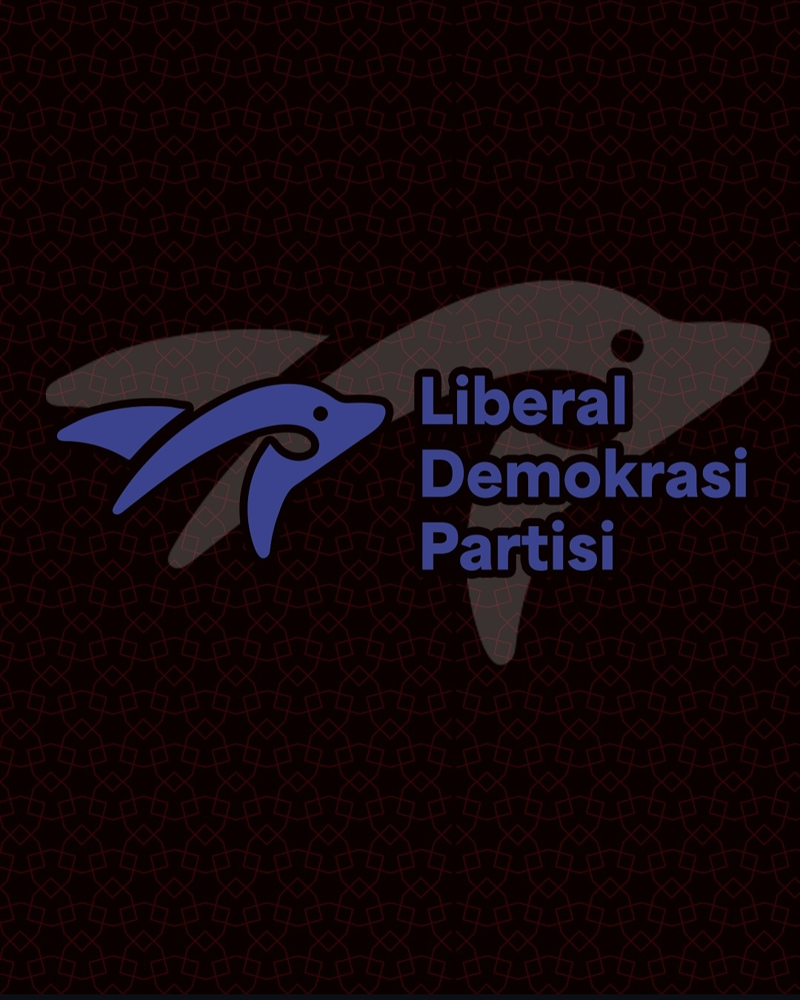
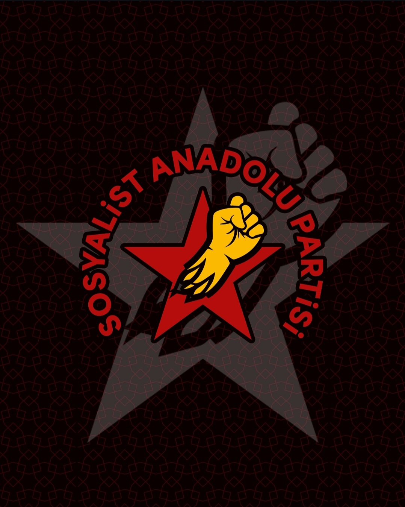
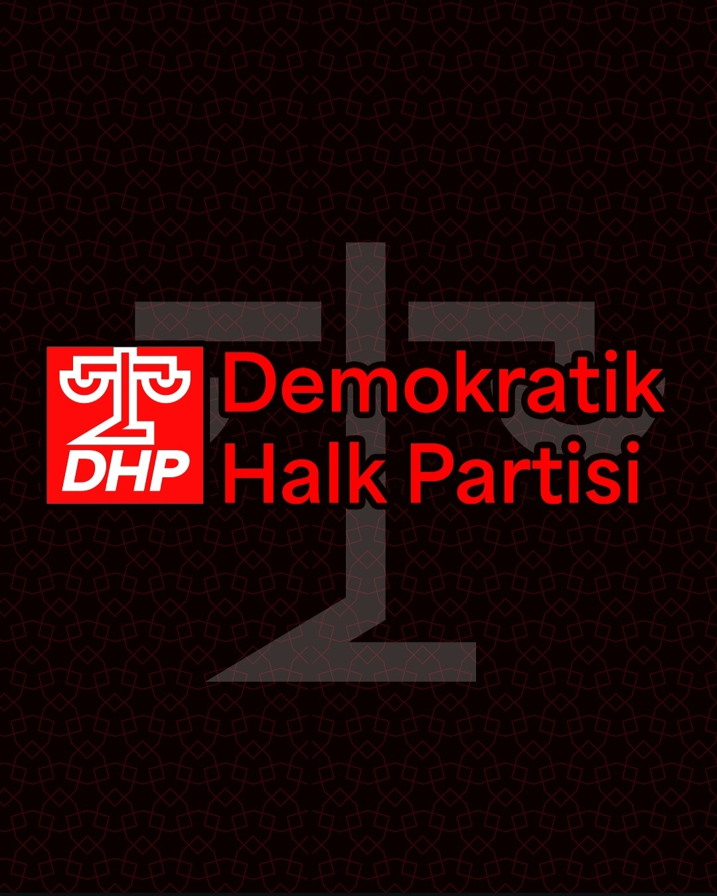
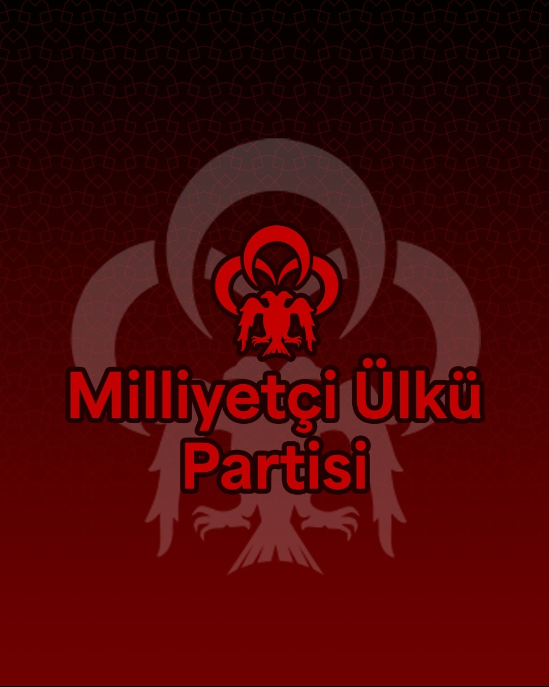
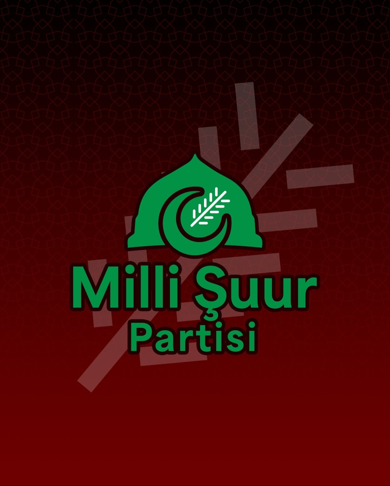
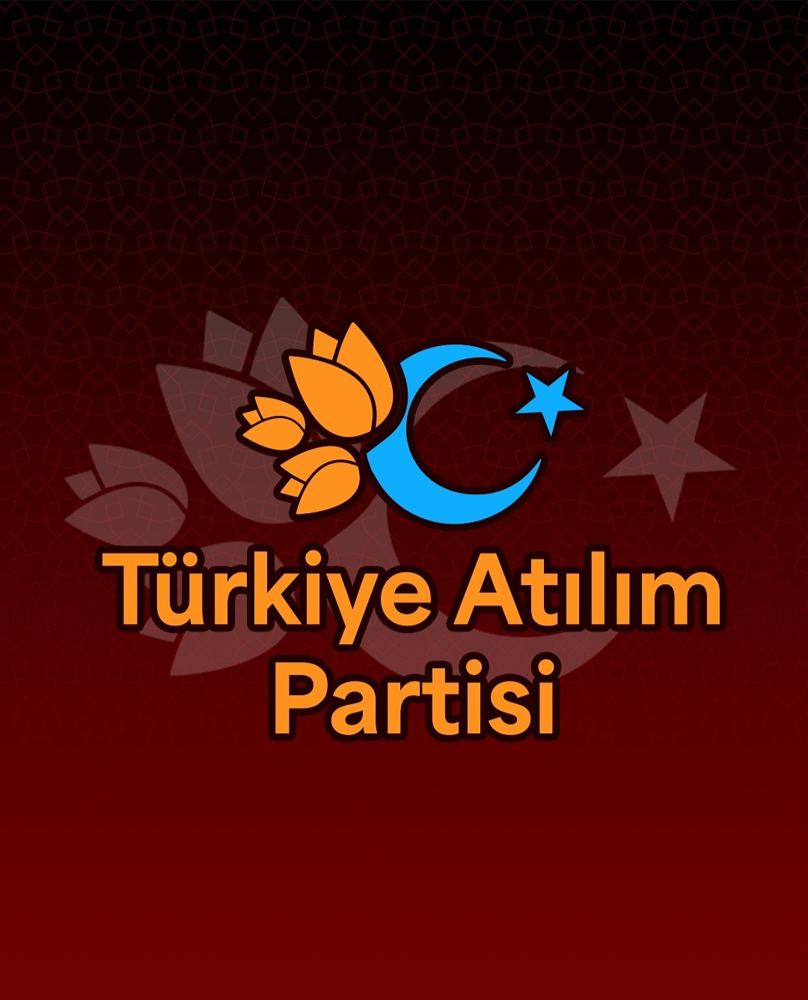

Liberal Demokrasi Partisi
Kuruluş: 2025
"Söz Milletin, Türkiye Herkesin!"
Klasik Liberalizm, Liberal Demokrasi,Ekonomik Liberalizm, Pro-Avrupacılık,Muhafazakar Liberalizm

Sosyalist Anadolu Partisi
Kuruluş: 2025
"Haydi Anadolu! Yola Gel, Sola Gel!"
Ulusalcılık, Avrasyacılık, Batı ve Nato Karşıtlığı, Sol Popülizm, Sosyalizm, Enternasyonalizm,Anti-emperyalizm, Komünizm, Sol Milliyetçilik, Milli Demokrat Devrim

Demokratik Halk Partisi
Kuruluş: 2025
"Cumhuriyeti Kuran Anlayışla Yeniden Büyük Türkiye!"
Sosyal Demokrasi, Kemalizm, Atatürkçülük, Cumhuriyetçilik,Demokratik Sosyalizm, Pro-Avrupacılık, Ulusalcılık, Sosyal Liberalizm, Laiklik

Milliyetçi Ülkü Partisi
Kuruluş: 2025
"Tam Bağımsız ve Güçlü Türkiye'nin teminatıyız!"
Ülkücülük, Türk Miliyetçiliği, Türk-İslam Sentezi, Dokuz Işık, İslami Milliyetçilik, Turancılık, Neo-Faşizm, Milli Muhafazakârlık, Sağ Popülizm, Atatürkçülük, Avrupa Şüpheciliği

Milli Şuur Partisi
Kuruluş: 2025
"Türkiye Adil Düzen'e Koşuyor!"
Milli Görüş, Ümmetçilik, Antisiyonizm, İslamcılık, Sosyal Muhafazakârlık, Avrupa Şüpheciliği, Yeni Osmanlıcılık, Erbakancılık

Türkiye Atılım Partisi
Kuruluş: 2025
"Büyük Millet, Büyük Güç! Hedef : Türk yüzyılı!"
Muhafazakâr Demokrasi, Sağ Popülizm, Ilımlı Avrupa Şüpheciliği, İlliberalizm,Yeni Osmanlıcılık, Atlantikçilik, Pro-Avrupacılık, Siyasal İslamcılık, Ümmetçilik, Muhafazakârlık